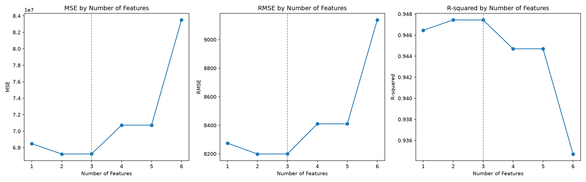
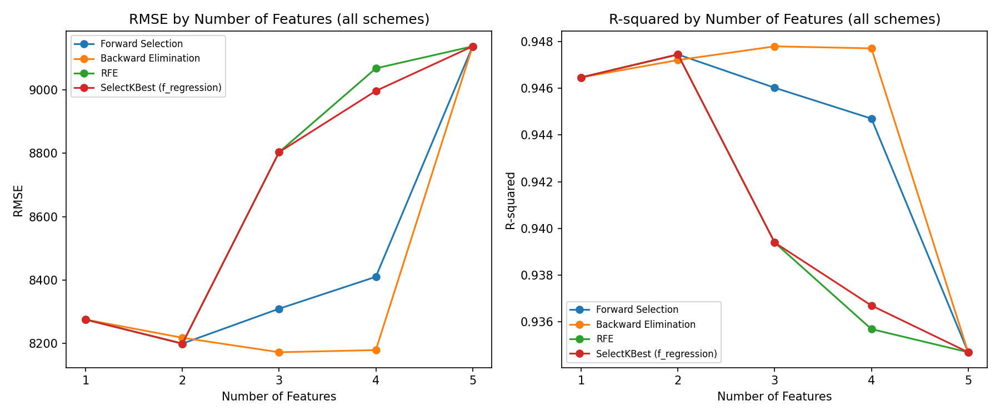

Multiple Linear Regression · scikit-learn
sklearn 多元線性迴歸（MLR）— Kaggle 50_Startups
分析 Kaggle 50_Startups 多元線性迴歸的特徵選擇方案，比較使用 1～5 個特徵時的 RMSE 與 R²，並附上可重現結果的 prompt。
最佳特徵數（Forward）
2
最低測試 RMSE
8,198.80
最高測試 R²
0.9474
全部 5 特徵 RMSE
9,137.99
1. Forward Selection：1～5 個特徵的表現
State 做 One-Hot Encoding 並 drop_first=True（California 為基準，避免 dummy variable trap），得到 5 個候選特徵：R&D Spend、Administration、Marketing Spend、State_Florida、State_New York。訓練 / 測試 = 80 / 20，random_state=0。每一步加入「使測試 RMSE 最小」的特徵。

| 特徵數 | Selected Features | RMSE | R² |
|---|---|---|---|
| 1 | [R&D Spend] | 8274.868018 | 0.946459 |
| 2 | [R&D Spend, Marketing Spend] （最佳） | 8198.797191 | 0.947439 |
| 3 | [R&D Spend, Marketing Spend, State_New York] | 8309.059683 | 0.946015 |
| 4 | [R&D Spend, Marketing Spend, State_New York, State_Florida] | 8409.916714 | 0.944697 |
| 5 | [R&D Spend, Marketing Spend, State_New York, State_Florida, Administration] | 9137.990153 | 0.934707 |
分析
- R&D Spend 是主導特徵：單獨使用就有 R² = 0.9465，任何方案第 1 個選到的都是它。
- 2 個特徵最佳：加入 Marketing Spend 後 RMSE 降到最低 8198.80、R² 最高 0.9474；再加特徵誤差上升 → 測試集上的 overfitting（U 型曲線）。
- State 幾乎沒有解釋力：加入 State_New York、State_Florida 後 RMSE 反而升到 8309 → 8410。
- Administration 是最差的特徵：最後加入時 RMSE 從 8410 跳到 9138，R² 降到 0.9347。
- 注意：作業圖片第 5 列標為
State_California，但在drop_first=True下 California 是被丟掉的基準類別，第 5 個實際加入的是Administration（數值 9137.990153 / 0.934707 完全一致）。
2. 特徵選擇方案比較
同一份切分、同一個 LinearRegression，比較四種方案在 k = 1～5 時選出的特徵與測試集表現。

| 方案 | 原理 | 最佳 k | 最佳特徵組合 | RMSE | R² |
|---|---|---|---|---|---|
| Forward Selection | 從空集合開始，每步加入讓 RMSE 最小的特徵 | 2 | R&D, Marketing | 8198.80 | 0.9474 |
| Backward Elimination | 從全部特徵開始，每步移除讓 RMSE 最小的特徵 | 3 | R&D, Administration, State_Florida | 8171.65 | 0.9478 |
| RFE | 依標準化後係數絕對值，遞迴刪除最小者 | 2 | R&D, Marketing | 8198.80 | 0.9474 |
| SelectKBest | f_regression 單變量 F 檢定，取前 k 高 | 2 | R&D, Marketing | 8198.80 | 0.9474 |
各方案 1～5 特徵 RMSE
| 方案 | k=1 | k=2 | k=3 | k=4 | k=5 |
|---|---|---|---|---|---|
| Forward Selection | 8274.87 | 8198.80 | 8309.06 | 8409.92 | 9137.99 |
| Backward Elimination | 8274.87 | 8217.45 | 8171.65 | 8178.37 | 9137.99 |
| RFE | 8274.87 | 8198.80 | 8803.78 | 9068.54 | 9137.99 |
| SelectKBest (f_regression) | 8274.87 | 8198.80 | 8803.78 | 8997.20 | 9137.99 |
比較結論
- 四種方案在 k = 1 都選 R&D Spend；k = 5 都是全部特徵（RMSE 9137.99），差異只在中間的選法。
- RFE 與 SelectKBest 只看係數大小或單變量相關，k = 3 時都納入 Administration，RMSE 直接升到 8804，表現最差。
- Backward Elimination 在 k = 3 得到最低 RMSE 8171.65，但只比 Forward 的 k = 2 低 27（約 0.3%）。這兩種 wrapper 方法都直接用測試集挑特徵，會有選擇偏誤（data leakage）；正式做法應改用訓練集上的 cross-validation 來選。
- 整體建議：R&D Spend + Marketing Spend 兩個特徵就足夠，簡單且在三種方案中一致最佳。
3. CRISP-DM
| 階段 | 本作業對應內容 |
|---|---|
| Business Understanding | 預測新創公司的 Profit，找出哪些支出（R&D / Administration / Marketing）與所在州對獲利影響最大。 |
| Data Understanding | 50 筆、3 個數值特徵 + 1 個類別 State，無缺失值；R&D Spend 與 Profit 相關最高。 |
| Data Preparation | State One-Hot Encoding（drop_first=True），80 / 20 切分（random_state=0）。 |
| Modeling | LinearRegression + 四種特徵選擇方案（Forward、Backward、RFE、SelectKBest）。 |
| Evaluation | 測試集 RMSE 與 R²，畫出特徵數 1～5 的曲線比較。 |
| Deployment | 選用 R&D Spend + Marketing Spend 的模型，報告發佈到 GitHub Pages。 |
4. 可重現此結果的 Prompt
把下面的 prompt 貼給 AI（例如 Claude），並附上 50_Startups.csv，就能產生上面的程式、表格與圖。
請用 Python（pandas、numpy、scikit-learn、matplotlib）分析 Kaggle 50_Startups 資料集
（50_Startups.csv，欄位：R&D Spend, Administration, Marketing Spend, State, Profit）
的多元線性迴歸特徵選擇方案，目標變數為 Profit。
要求：
1. 資料前處理：State 用 pd.get_dummies(..., drop_first=True, dtype=int) 做 One-Hot Encoding，
得到 5 個候選特徵；train_test_split(test_size=0.2, random_state=0)。
2. 模型使用 sklearn.linear_model.LinearRegression，評估指標為測試集 RMSE 與 R-squared。
3. 主要方案 Forward Selection：從空集合開始，每一步加入使測試集 RMSE 最小的特徵，
直到 5 個特徵全部加入，記錄每一步的 Number of Features、Selected Features、RMSE、R-squared。
4. 另外比較 Backward Elimination、RFE（特徵先標準化）、SelectKBest(f_regression)，
各自列出 k = 1~5 的選出特徵、RMSE、R-squared。
5. 繪圖：
(a) 1×2 子圖：「RMSE by Number of Features」與「R-squared by Number of Features」
（Forward Selection，折線加圓點），存成 images/rmse_r2_by_features.png；
(b) 四種方案疊在同一組 RMSE / R² 圖上比較，存成 images/scheme_comparison.png。
6. 輸出 Forward Selection 結果表（Number of Features, Selected Features, RMSE, R-squared）
成 HTML 表格。
7. 用繁體中文分析：最佳特徵數、哪些特徵最重要 / 最不重要、是否 overfitting、
各方案差異，並提醒用測試集選特徵會有 data leakage。
8. 依 CRISP-DM 六階段整理成報告，最後做成單一 index.html 部署到 GitHub Pages。
預期結果（Forward Selection）：
k=1 [R&D Spend] RMSE 8274.87 R² 0.9465
k=2 [+Marketing Spend] RMSE 8198.80 R² 0.9474（最佳）
k=3 [+State_New York] RMSE 8309.06 R² 0.9460
k=4 [+State_Florida] RMSE 8409.92 R² 0.9447
k=5 [+Administration] RMSE 9137.99 R² 0.9347完整程式碼（mlr_50_startups.py）
展開程式碼
import os
import numpy as np
import pandas as pd
import matplotlib.pyplot as plt
from sklearn.linear_model import LinearRegression
from sklearn.model_selection import train_test_split
from sklearn.feature_selection import RFE, SelectKBest, f_regression
from sklearn.metrics import mean_squared_error, r2_score
os.makedirs("images", exist_ok=True)
# ---------- Data Preparation ----------
df = pd.read_csv("50_Startups.csv")
print(df.head())
print(df.isnull().sum())
# One-Hot Encoding，drop_first 避免 dummy variable trap（California 為基準）→ 5 個候選特徵
df = pd.get_dummies(df, columns=["State"], drop_first=True, dtype=int)
X = df.drop(columns=["Profit"])
y = df["Profit"]
X_train, X_test, y_train, y_test = train_test_split(
X, y, test_size=0.2, random_state=0
)
def evaluate(features):
model = LinearRegression().fit(X_train[features], y_train)
pred = model.predict(X_test[features])
mse = mean_squared_error(y_test, pred)
return mse, np.sqrt(mse), r2_score(y_test, pred)
def make_table(scheme, feature_sets):
rows = []
for k, features in enumerate(feature_sets, start=1):
mse, rmse, r2 = evaluate(features)
rows.append({"Scheme": scheme, "Number of Features": k,
"Selected Features": list(features),
"MSE": mse, "RMSE": rmse, "R-squared": r2})
return pd.DataFrame(rows)
n = X.shape[1]
# ---------- Scheme 1: Forward Selection（每步加入使測試 RMSE 最小的特徵）----------
remaining, selected, forward_sets = list(X.columns), [], []
while remaining:
best = min(remaining, key=lambda f: evaluate(selected + [f])[1])
selected.append(best)
remaining.remove(best)
forward_sets.append(list(selected))
# ---------- Scheme 2: Backward Elimination（每步移除使測試 RMSE 最小的特徵）----------
current, backward_sets = list(X.columns), [list(X.columns)]
while len(current) > 1:
worst = min(current, key=lambda f: evaluate([c for c in current if c != f])[1])
current.remove(worst)
backward_sets.insert(0, list(current))
# ---------- Scheme 3: RFE（依係數大小遞迴刪除，特徵先標準化）----------
X_std = (X_train - X_train.mean()) / X_train.std()
rfe_sets = []
for k in range(1, n + 1):
rfe = RFE(LinearRegression(), n_features_to_select=k).fit(X_std, y_train)
rfe_sets.append(list(X.columns[rfe.support_]))
# ---------- Scheme 4: SelectKBest（f_regression 單變量 F 檢定）----------
kbest_sets = []
for k in range(1, n + 1):
kb = SelectKBest(f_regression, k=k).fit(X_train, y_train)
kbest_sets.append(list(X.columns[kb.get_support()]))
tables = {
"Forward Selection": make_table("Forward Selection", forward_sets),
"Backward Elimination": make_table("Backward Elimination", backward_sets),
"RFE": make_table("RFE", rfe_sets),
"SelectKBest (f_regression)": make_table("SelectKBest (f_regression)", kbest_sets),
}
for name, t in tables.items():
print(f"\n=== {name} ===")
print(t.drop(columns="Scheme").to_string(index=False))
result = tables["Forward Selection"]
# ---------- 貼圖 1：Forward Selection 的 RMSE / R² vs. 特徵數 ----------
fig, ax = plt.subplots(1, 2, figsize=(12, 5))
for a, col in zip(ax, ["RMSE", "R-squared"]):
a.plot(result["Number of Features"], result[col], marker="o")
a.set_title(f"{col} by Number of Features")
a.set_xlabel("Number of Features"); a.set_ylabel(col)
plt.tight_layout()
plt.savefig("images/rmse_r2_by_features.png", dpi=150)
# ---------- 貼圖 2：四種方案比較 ----------
fig, ax = plt.subplots(1, 2, figsize=(12, 5))
for name, t in tables.items():
ax[0].plot(t["Number of Features"], t["RMSE"], marker="o", label=name)
ax[1].plot(t["Number of Features"], t["R-squared"], marker="o", label=name)
for a, col in zip(ax, ["RMSE", "R-squared"]):
a.set_title(f"{col} by Number of Features (all schemes)")
a.set_xlabel("Number of Features"); a.set_ylabel(col)
a.set_xticks(range(1, n + 1)); a.legend(fontsize=8)
plt.tight_layout()
plt.savefig("images/scheme_comparison.png", dpi=150)
plt.show()
# 另存 HTML 表格，方便貼進報告
result[["Number of Features", "Selected Features", "RMSE", "R-squared"]].to_html(
"images/feature_selection_table.html", index=False)
pd.concat(tables.values()).to_csv("images/all_schemes.csv", index=False)附錄：資料集欄位
| 欄位 | 型態 | 說明 |
|---|---|---|
| R&D Spend | float | 研發支出 |
| Administration | float | 行政支出 |
| Marketing Spend | float | 行銷支出 |
| State | category | New York / California / Florida（One-Hot + drop_first 後 2 欄） |
| Profit | float | 目標變數 |